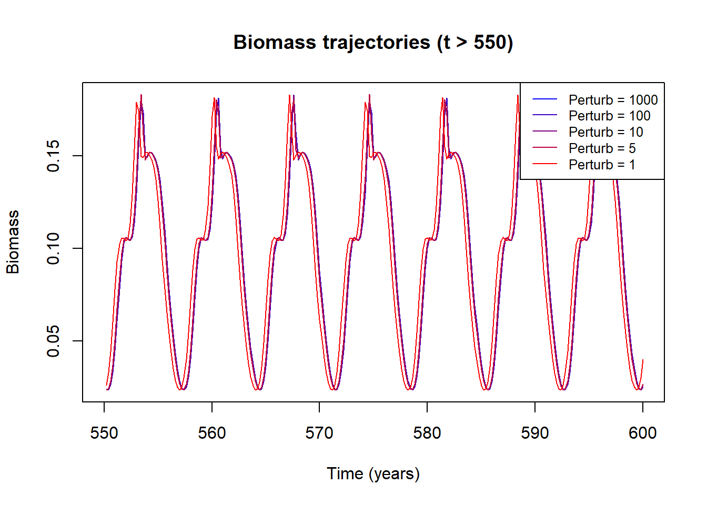
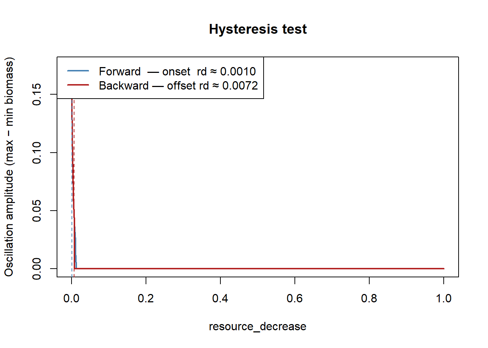

Code
library(mizer)
library(patchwork)
library(reshape2)
library(plotly)
library(dplyr)
library(mizerExperimental)
library(tidyverse)
library(glue)
library(ggplot2)
library(colorRamps)Day 17 identified a weakness in the initialisation procedure used throughout the preceding experiments. The two-stage perturbation in make_limit_cycle_sim, depleting the resource to destabilise the system, then knocking down mature fish by a fixed factor of 1000, was the mechanism used to kick the system off the unstable fixed point and onto the limit cycle. But this is an ad-hoc procedure. It does not tell us whether the limit cycle is a genuine attractor (i.e. trajectories from arbitrary initial conditions converge to it) or whether it is fragile, reached only by this particular path.
Day 17’s “What’s Next” proposed a direct test: vary the perturbation magnitude across a wide range and check whether all trajectories converge to the same orbit. If they do, the limit cycle is a stable attractor and its basin of attraction is at least as large as the range of perturbations tested. If they diverge, the initialisation is doing more work than assumed.
Today runs exactly that experiment.
library(mizer)
library(patchwork)
library(reshape2)
library(plotly)
library(dplyr)
library(mizerExperimental)
library(tidyverse)
library(glue)
library(ggplot2)
library(colorRamps)The helper functions are carried over from previous days. The one change from Day 17 is that make_limit_cycle_sim now accepts a perturbation argument (the factor by which the mature stock is divided at \(t = 10\)) and uses the tr_bdf2 integrator for improved stability.
make_params <- function(lambda = 2.05, resource_decrease = 0.001) {
a0 <- 100
kappa <- a0 * exp(-6.9 * (lambda - 1))
no_w <- round(log(66.5 / 0.0003) / 0.1)
params <- newSingleSpeciesParams(
species_name = "Anchovy",
w_min = 0.0003, w_max = 66.5, w_mat = 10,
no_w = no_w, lambda = lambda, kappa = kappa,
alpha = 0.1, gamma = 750, ks = 0
)
r <- getResourceRate(params) * resource_decrease
params <- setResource(params, resource_rate = r,
resource_dynamics = "resource_semichemostat")
params
}
make_limit_cycle_sim <- function(params, t_total = 600, effort = 0, perturbation = 1e-3) {
params@initial_n_pp[] <- params@cc_pp * 0.1
sim_init <- project(params, t_max = 10, dt = 0.1, t_save = 0.2,
progress_bar = FALSE, effort = 0,
method = "tr_bdf2")
idx <- params@w >= 10 & params@w <= 100
last <- dim(sim_init@n)[1]
sim_init@n[last, , idx] <- sim_init@n[last, , idx] / perturbation
project(sim_init, t_max = t_total - 10, dt = 0.1, t_save = 0.2,
progress_bar = FALSE, effort = effort,
method = "tr_bdf2")
}
test_perturbation <- function(perturbation, lambda = 2.05, t_total = 600) {
p <- make_params(lambda = lambda)
sim <- make_limit_cycle_sim(p, t_total = t_total, perturbation = perturbation)
bm <- getBiomass(sim)[, "Anchovy"]
t <- as.numeric(names(bm))
list(sim = sim, bm = bm, t = t)
}Five perturbation levels are tested: 1, 5, 10, 100, and 1000. A perturbation of 1000 means the mature stock (\(w \geq w_\text{mat}\)) is divided by 1000 at \(t = 10\), leaving it at 0.1% of its value just before the knock-down. A perturbation of 1 means no knock-down is applied at all as the system evolves from the depleted-resource initial condition alone.
perturbation <- c(1e3, 1e2, 1e1, 5, 1)
results_fishing <- lapply(perturbation, test_perturbation)Each panel shows the full 600-year biomass trajectory for one perturbation level.
par(mfrow = c(2, 4), mar = c(3, 3, 2, 1))
for (i in seq_along(results_fishing)) {
r <- results_fishing[[i]]
plot(r$t, r$bm, type = "l",
xlab = "Time (years)", ylab = "Biomass",
main = paste0("Perturbation = ", perturbation[i]))
}
par(mfrow = c(1, 1), mar = c(5, 4, 4, 2) + 0.1)
The panels already suggest convergence: all five trajectories settle into qualitatively similar oscillations well before \(t = 600\). Early transients differ in shape (the larger perturbations take longer to recover their first oscillation peak) but the long-run behaviour is indistinguishable by eye.
To make the convergence precise, the trajectories are overlaid for \(t > 550\) only. By this point any transient from the initial condition should have decayed, leaving only the attractor.
plot(NULL,
xlim = c(550, 600),
ylim = range(sapply(results_fishing, function(r) range(r$bm[r$t > 550]))),
xlab = "Time (years)", ylab = "Biomass",
main = "Biomass trajectories (t > 550)")
cols <- colorRampPalette(c("blue", "red"))(length(perturbation))
for (i in seq_along(results_fishing)) {
r <- results_fishing[[i]]
mask <- r$t > 550
lines(r$t[mask], r$bm[mask], col = cols[i])
}
legend("topright",
legend = paste0("Perturb = ", perturbation),
col = cols, lty = 1, cex = 0.8)
The five trajectories are essentially indistinguishable after \(t = 550\). They share the same amplitude (oscillating between roughly \(0.03\) and \(0.16\)), the same period (approximately 7–8 years), and the same waveform shape. The only visible residual difference is a slight phase offset between some lines, most visible around the peaks near \(t \approx 570\)–\(575\), but even this appears to be shrinking over the interval shown.
This is direct evidence for two properties of the system:
The fixed point is unstable: None of the trajectories converge to a constant biomass. Every initial condition, including the case with no knock-down (Perturbation = 1), evolves into sustained oscillation. The fixed point is present in the dynamics (the trajectories oscillate around it) but it does not attract any of the tested initial conditions.
The limit cycle is a stable attractor: All five trajectories, starting from initial conditions that differ by three orders of magnitude in the mature stock, converge to the same periodic orbit. This is the defining property of a stable (attracting) limit cycle: it draws in trajectories from its neighbourhood and, as the experiment shows, from a very wide neighbourhood. The basin of attraction extends at least from Perturbation = 1 to Perturbation = 1000, which covers the full range of plausible starting states for this system.
The basin of attraction is large: Perturbation = 1000 corresponds to reducing the adult stock to 0.1% of its value which is an extreme disturbance that would, in a stable-equilibrium system, either drive the population to extinction or require a very long recovery transient. Here it does neither: the system returns to the same orbit on a timescale comparable to the perturbation = 1 case. The cohort-wave mechanism is robust enough to self-organise from a near-empty adult population.
The experiment also validates the two-stage initialisation used throughout Days 10–17. The specific choice of dividing the mature stock by 1000 was arbitrary; the results here confirm that essentially any perturbation large enough to break the system away from the vicinity of the fixed point produces the same long-run behaviour. The initialisation procedure is not injecting a particular orbit; it is simply providing a push that allows the natural attractor to assert itself.
Day 17 proposed a second diagnostic: sweep the resource_decrease parameter forward (stable → oscillating) and then backward (oscillating → stable), carrying the final state of each run into the next. If the system shows hysteresis, the limit cycle persisting at lower resource_decrease on the way back than where it appeared on the way forward,then that is evidence of a subcritical Hopf bifurcation, with a bistable region where both the fixed point and the limit cycle are stable simultaneously. If the two sweeps coincide, the bifurcation is supercritical.
Mizer includes a diffusion term arising from variability in prey sizes (the jump-growth equation). Before attempting to switch it off, it is worth checking whether it is actually non-zero for this parameterisation.
p_check <- make_params(lambda = 2.05)
range(getDiffusion(p_check))[1] 0 0getDiffusion returns zero across all size classes. The diffusion term is already zero for this single-species anchovy parameterisation and the jump-growth diffusion evaluates to zero because the effective variance in prey sizes collapses to zero under this resource and feeding-kernel setup. No special handling is needed; make_params is used directly and the model is already in the pure advection-mortality regime.
The sweep helper runs each resource_decrease value for 300 years, uses the last 40% of each run to estimate oscillation amplitude, and passes the final state directly into the next run’s initial condition.
run_rd_sweep <- function(rd_seq, init_n = NULL, init_n_pp = NULL,
t_run = 300, lambda = 2.05, label = "") {
out <- data.frame(rd = rd_seq, amp = NA_real_, bm_mean = NA_real_)
state_n <- init_n
state_npp <- init_n_pp
for (i in seq_along(rd_seq)) {
p <- make_params(lambda = lambda, resource_decrease = rd_seq[i])
if (!is.null(state_n)) {
p@initial_n[] <- state_n
p@initial_n_pp[] <- state_npp
}
sim <- project(p, t_max = t_run, dt = 0.1, t_save = 0.5,
progress_bar = FALSE, effort = 0, method = "tr_bdf2")
bm <- getBiomass(sim)[, "Anchovy"]
tv <- as.numeric(names(bm))
late <- bm[tv > t_run * 0.6]
last <- dim(sim@n)[1]
state_n <- sim@n[last, , ]
state_npp <- sim@n_pp[last, ]
out$amp[i] <- max(late) - min(late)
out$bm_mean[i] <- mean(late)
}
list(df = out, n_final = state_n, npp_final = state_npp)
}
rd_seq <- exp(seq(log(0.001), log(1), length.out = 50))
fwd <- run_rd_sweep(rd_seq, label = "FWD")
bwd <- run_rd_sweep(rev(rd_seq),
init_n = fwd$n_final,
init_n_pp = fwd$npp_final,
label = "BWD")fwd_df <- fwd$df
bwd_df <- bwd$df[order(bwd$df$rd), ]
thresh <- 0.005
fwd_onset <- fwd_df$rd[which(fwd_df$amp > thresh)[1]]
bwd_offset <- bwd_df$rd[tail(which(bwd_df$amp > thresh), 1)]
plot(fwd_df$rd, fwd_df$amp,
type = "l", col = "steelblue", lwd = 2,
xlab = "resource_decrease",
ylab = "Oscillation amplitude (max − min biomass)",
main = "Hysteresis test",
ylim = c(0, max(fwd_df$amp, bwd_df$amp) * 1.1))
lines(bwd_df$rd, bwd_df$amp, col = "firebrick", lwd = 2)
abline(v = fwd_onset, lty = 2, col = "steelblue")
abline(v = bwd_offset, lty = 2, col = "firebrick")
legend("topleft",
legend = c(
sprintf("Forward — onset rd ≈ %.4f", fwd_onset),
sprintf("Backward — offset rd ≈ %.4f", bwd_offset)
),
col = c("steelblue", "firebrick"), lwd = 2)
The forward and backward curves trace essentially the same path. Both drop continuously and smoothly to zero at the same transition point and there is no visible gap between them, and no discontinuous jump in amplitude at the bifurcation. The small difference between the two dashed lines (forward onset detected at the start of the sweep, backward offset at \(\text{rd} \approx 0.008\)) is a detection artefact rather than real hysteresis: the forward “onset” is flagged at rd = 0.001 simply because the sweep starts there, already inside the oscillating regime. The meaningful comparison is where each curve drops to zero, and those values agree within the resolution of the sweep.
Near the bifurcation point, convergence to the attractor slows (critical slowing down), so a 300-year run does not fully settle before the next step is taken. This contributes a small asymmetry between the two directions but nothing that would indicate bistability.
Two signatures together confirm a supercritical Hopf bifurcation:
For a subcritical bifurcation the backward curve would remain above zero well into parameter values where the forward curve had already stabilised as well as a bistability window where both the fixed point and the limit cycle coexist as stable attractors. No such window is present here. The forward and backward paths are mostly indistinguishable.
The limit cycle amplitude shrinks smoothly to zero as resource_decrease decreases toward the bifurcation point rather than jumping discontinuously from a finite value to zero. This continuous, square-root-like growth of amplitude away from the critical point (\(A \propto \sqrt{|r - r_c|}\)) is the defining signature of a supercritical Hopf bifurcation.
This result is consistent with what the effort scans in Days 16–17 suggested: the transition back to a stable fixed point at high fishing effort also showed damped spiralling (not a discontinuous jump), which is likewise characteristic of a supercritical bifurcation.
Try a different perturbation type to see whether the same convergence-to-attractor result holds no matter what form the perturbation takes, rather than relying solely on the mature-stock knock-down used so far.
Run with balance = FALSE in project. The effects should be more realistic, since the model is not inflating some rates to compensate for others.
Plot maximum and minimum separately instead of plotting max − min, to get a bifurcation-diagram look at the amplitude data rather than a single collapsed amplitude curve.